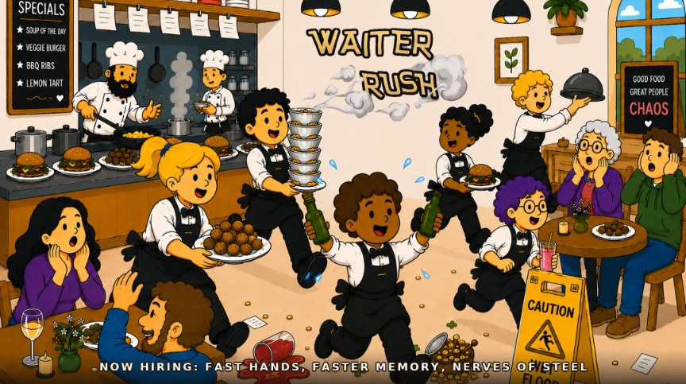

Grab the order ticket from the counter, remember which table it's for, and deliver it before the ticket board goes blank on your walk. Miss too many tables and the shift is over.
Desktop: Arrow keys or WASD. Mobile: use the on-screen pad.
They all start in an apron. Earn tips and they don't stay that way.
Couldn't load the character art — you'll keep the classic waiter. Everything else works as normal.